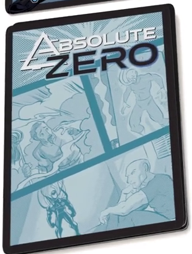

P2
Powerhound_2000
2021-04-06 14:09 UTC
#1
That cover is fantastic! It has a very artsy look to it. Makes it really fit with A Day in the Life: Bunker as well. I look forward to listening to the epsiode sometime this week.
Oh. Being depressed but not suicidal is a thing? See, this is why not just positive but accurate media portrayals are important. Until literally this moment, I just sort of thought I was doing depression wrong. :B
Adam put the triangle in because triangles always rise. 
So if he can have a formal wear suit, he can totally have a beatnik suit, too. Robotic. Coldproof. Beret.
Clearly, Absolute Zero needs more penguin cuddles. It’s the sure-fire way to cheer that gloom right out of him!
Ahh, I hadn’t thought of the leg-cyclone method of flight for weather/wind-controllers, but that is also valid.
So I looked up that issue of X-Factor Adam was talking about. It’s issue #87 of the original run, which you can now find collected in the X-Factor: Visionaries trade, volume 4. It is really good, and I don’t even know the characters that well.
It’s really wack how ingrained the stereotype is. X( In circles of people who have depression that I’ve interacted with over the years it’s practically a running gag that we all have periods of “I hate everything about my life and hate living it” that we studiously avoid actually talking to our therapists about because we found out the hard way if we try they will force us to go to the local suicide watch mental ward thing despite us not actually being suicidal.
So when I first discovered Sentinels all those years ago and read AZ’s bio/cards I was like “Oh my god, someone actually gets it.”
Now I’m a little sad finding out why they get it, though. Poor Adam. 
All the answers to my questions were great, the ones about Christine and his various takeaways from it being particularly thought provoking and gut-punchy. I was not expecting my questions about his family reunion and parents to take those particular angles, heh. X3 I also need to put “Metahuman Therapy Sessions” on my list of episodes to suggest at some point.
I love the idea of the “Scrav Bag” set for Scravengers toys. The way I’d market it, the package has one character in a clear blister pack at the top, still dissected into the five separate parts, but with a rare head or arm, or a more fully thought-through character design, and then the lower half of the package is the bag – either an actual vinyl drawstring bag, or just an opaque section designed to look like a bag – which contains like 15 more random parts. (I mean, still in the proper mix, like three random heads, six random legs, etc.)
What I find funny is that the last time that image was brought up was also in an Absolute Zero-centric episode.
Also, because my brain hates me, I realized that AZ’s initial reaction to being invited to an O’Neil family reunion might well be something like, “But don’t you all hate me because it’s my fault she’s dead?” depending on when in his mental processing they asked.
I do like the interplay between him and Tachyon. I wonder how the dynamic was when Unity was introduced. I mean, I can see the philosopher and poet in him siding with Unity over Tachyon over whether Onmitron X was a person. Probably low key (“Kid’s got a point” said from the side when they’re aruguing, maybe).
Speaking of Tachyon’s lab and the personalities involved, I imagine Mr Frost’s reaction to Ms Lee showing up in Vengance was “Oh great, THAT idiot’s back.”
That comic is great!
So, one of the letter-writers presumed that Ryan Frost is white, and I thought that was interesting because I presumed that he was Black (partly because otherwise the Freedom Five is missing that representation). I don’t think we’ve seen any drawings of him pre-accident, so we don’t really know, do we?
As for as I know, yeah, Ryan Frost’s ethnicity is unknown.
That’s why I said “presumably”, FWIW, to mark off that I was taking a guess and leave it open to be corrected.
I think I made the assumption I did because Ryan’s bio went to the very specific pains of calling out that oh he had it all, fancy car, nice apartment, attractive wife, college degree, high-profile art critic job, and then completely loses it when his fiancée dies. Like not just being really sad, but outright giving up on everything.
I think that collectively gave me the impression in my head of him being deliberately set up as the specific literary trope of “guy who led a privileged life if self-aware about it who went to pieces because it was the first time he’d had a real setback”, and him being white would fit into the typical box of that trope.
Was that a fair takeaway? I don’t know. But it’s the one I had.
That said, the fact that they didn’t correct me and agreed with the Hipster analysis with the caveat being “wrong era” suggests I might have been right. Probably worth someone giving a very specific ask about, though.
From the DE rulebook there is the art of AZ pre accident from his deck back. Not sure how visible it is from that.

Heh, oh yeah, we do have pics of Hapless Janitor AZ.
It’s all blue but he does look sort of white, I think. At least, he has a lighter skin tone.
Based on the era he is from, it seems unlikely he would be anything besides a white guy.
I absolutely love stories of good guys having conflict without acrimony with other good guys, so this AZ/Legs headbutting is a treat for me.
I also really dig the heavy philosophy. I have a lot of loss and damage and regret in life, so while I might not agree with the points they’re making, I get a lot out of the deep meaningful discussion. It’s a nice break from the constant goofs.
I wonder how much of the depression Adam mentions is just like a low-powered metabolism that leaves him lacking in biochemical energy. We know he struggles with his sleep schedule and has a codependent relationship with caffeine. Maybe it’s literally not a psychological condition but a purely nutritional one, and if he moved to the tropics he’d be fine.
Sheesh, this is getting spooky. That thing about going to his girlfriend’s family reunion, because he’s the last connection they have left to her, is again resonant with my family history.
When did Burrower-Turns-The-Earth stop being Striped?